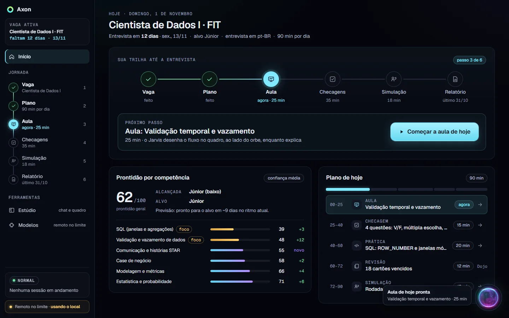
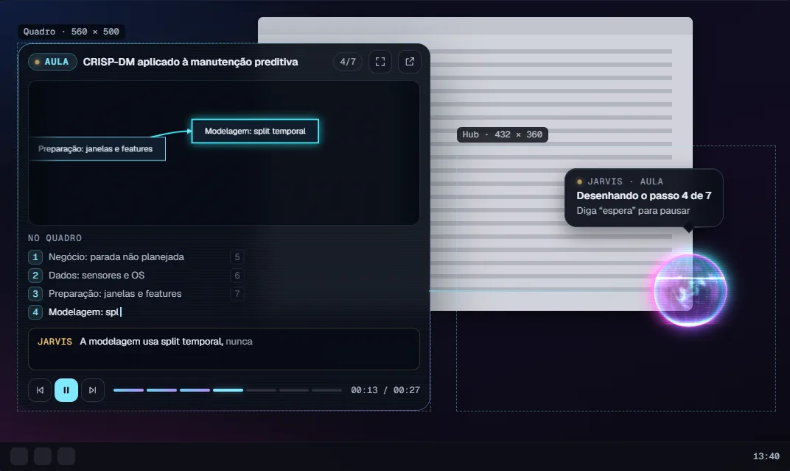

respostas corretas
Modelo local de 4B, avaliação cega no chat; houve 1 resposta errada. A meta registrada era 37 corretas e nenhuma errada.
PROJETO INDEPENDENTE · EM DESENVOLVIMENTO
Uma voz para pensar com contexto.
Um assistente pessoal para conversar, consultar documentos e apoiar o estudo. Voz, recuperação de informação e memória trabalham juntas em uma experiência pensada para o computador do usuário.
Concepção e direção de produto por Marcelo Machuca · implementação com apoio de agentes de IA
01 / EXPERIÊNCIA
A mesma base conecta conversa por voz, documentos e ferramentas de aprendizado. A interface Holo organiza esses caminhos sem esconder que algumas jornadas ainda estão em construção.

UMA INTERFACE, VÁRIOS CONTEXTOS
O projeto reúne um Hub de voz, um Estúdio para trabalhar com documentos e uma jornada de estudo. O quadro e as aulas são frentes de desenvolvimento, não uma promessa de conclusão.
O sistema procura contexto em fontes distintas e pode mostrar referências. A pessoa continua responsável por conferir as respostas.

02 / ARQUITETURA
O modelo C4 mantido no Structurizr descreve o turno em camadas: de regras e busca até a resposta em streaming. O diagrama abaixo é uma síntese para leitura.
Texto no Estúdio ou áudio no Hub. A transcrição pode usar Groq ou alternativas locais, conforme a configuração.
O roteador considera acesso e privacidade. O mecanismo busca documentos, memória e grafo; RRF combina as listas de resultados.
O contexto selecionado compõe o pedido ao LLM. Na arquitetura documentada, a geração é local; o reranking local segue em evolução.
O texto retorna em streaming e pode ser sintetizado em voz. Memória pessoal e fatos relacionados têm papéis distintos e critérios próprios de escrita.
Fonte: modelo C4 e notas de arquitetura do projeto, gerados em 03 nov 2026. O uso de serviços externos depende das funções e configurações escolhidas.
03 / AVALIAÇÃO
Os números abaixo são de experimentos internos documentados, não métricas de usuários nem garantias de produção.
Modelo local de 4B, avaliação cega no chat; houve 1 resposta errada. A meta registrada era 37 corretas e nenhuma errada.
Medição no tratamento do teste de 40 perguntas. É latência de texto, não o tempo até a primeira fala.
Resultado documentado no holdout nº 5, abaixo da meta de 75%. A seleção e recuperação de memórias seguem em desenvolvimento.
Fonte: catálogo de métricas e mapa de status do Structurizr, 02–03 nov 2026. Experimentos em ambiente e ramos específicos; não equivalem a uma validação completa da versão atual. Evidências disponíveis para apresentação em entrevista.
04 / DECISÕES
Três escolhas orientam o trabalho técnico e mostram onde ainda é preciso validar mais.
Documentos e fatos têm origens diferentes. A busca combina sinais, e respostas devem permitir conferência quando há fontes disponíveis.
O desenho prevê regras de acesso e saída de dados. A documentação registra correções e uma revisão de segurança ainda pendente; não trato o controle como garantia absoluta.
A fala é uma forma de acesso ao assistente. Transcrição, síntese, latência e hardware variam conforme os provedores e a configuração.
05 / ESTADO DO PROJETO
O Axon é um projeto independente e privado, pensado inicialmente para uso pessoal. Não apresento clientes, adoção comercial ou disponibilidade pública como resultados.
Fluxos de conversa, recuperação, componentes de voz, memória e interfaces. O comportamento varia entre ramos e ambientes.
Holo, estudo, qualidade de memória, reranking e revisões de privacidade. A documentação distingue o que existe do que está planejado.
O repositório é privado. Posso apresentar arquitetura, evidências e trechos adequados em uma conversa.